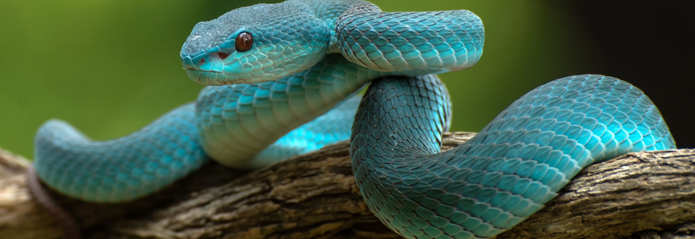

Balonowy Sklep Wężowy
Kobra
Kobra to rodzaj węży z rodziny kobra (Elapidae), znany z niezwykle charakterystycznych, długich, zakrzywionych pysków oraz potężnego uderzenia, które pozwala im szybko i precyzyjnie atakować swoich ofiar. Kobry są szeroko rozprzestrzenione na całym świecie, głównie w tropikalnych i subtropikalnych regionach, gdzie często spotyka się je w lasach, sawannach i terenach rolnych. Są to zwierzęta o różnej wielkości, od małych gatunków, takich jak kobra białokurzawa (Naja kaouthia), do dużych, jak kobra indyjska (Naja naja) i kobra bengalska (Naja bengalensis). Kobry są jednymi z najbardziej znanych i najczęściej spotykanych węży na świecie ze względu na ich atrakcyjny wygląd, potężne uderzenie i znaczącą rolę w kulturze i mitologii wielu społeczzeń.
Cena: 100.00 zł
Kobry należą do rodziny Elapidae, która obejmuje również inne znane gatunki węży, takie jak mamba i krait. Gatunki te są znane z potężnych, neurotoksykicznych jadów, które mogą powodować poważne lub nawet śmiertelne zatrucia. Kobry są jednymi z nielicznych węży, które atakują swoje ofiary bezpośrednio, często z użyciem ich potężnego pyska do precyzyjnego uderzenia. Ich jad jest zazwyczaj skierowany przeciwko innym zwierzętom, ale niektóre gatunki, takie jak kobra białokurzawa, są znane z atakowania ludzi, co czyni je szczególnie niebezpiecznymi.
Kobry są bardzo inteligentne i zdolne do uczenia się, co pozwala im na efektywne przetrwanie w różnorodnych środowiskach. Ich dieta składa się głównie z małych zwierząt, takich jak myszy, ptaki i gady, ale niektóre gatunki, takie jak kobra bengalska, są również drapieżnikami lądowymi, polującymi na duże ssaki i ptaki. Kobry są zwierzętami nocnymi, choć niektóre gatunki, takie jak kobra białokurzawa, mogą być aktywne również w ciągu dnia.
Wiele gatunków kobr jest zagrożonych wyginięciem, często z powodu utraty siedlisk, polowań i handlu. Ochrona tych unikalnych zwierząt wymaga zarówno działań na poziomie lokalnym, jak i międzynarodowym, aby zapewnić ich przetrwanie i zachowanie w naturalnym środowisku.